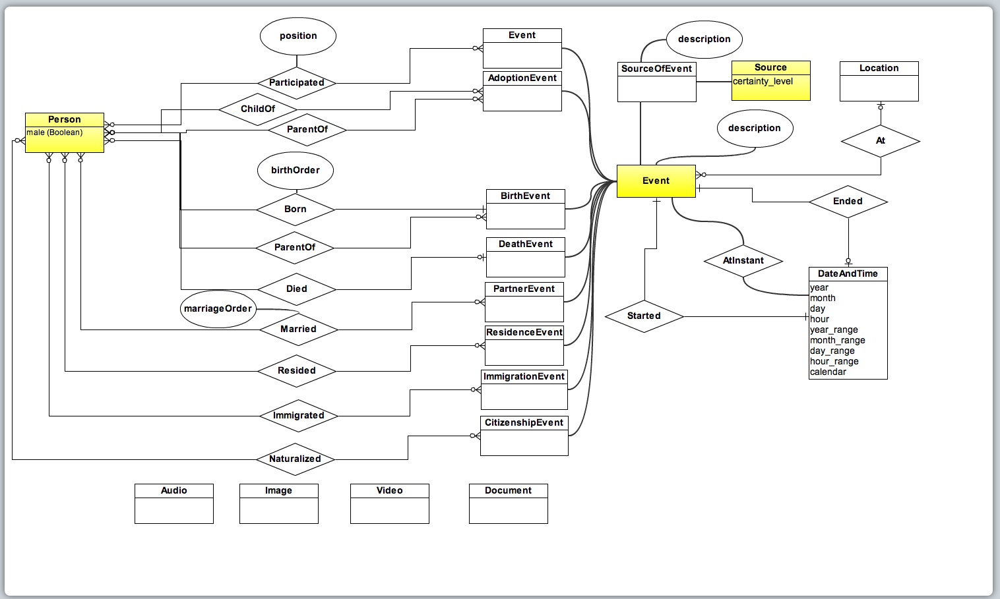

OpenGen Data Model
[These are just rough notes to get an entry started for this model -- Tom Wetmore.]
OpenGen is another effort to define a standard for genealogical interchange. They have a website site at opengen.org.
I attended the OpenGen meeting held on 8 February 2011. The main topic was a review of a spreadsheet comparing the contents of GEDCOM and the contents of the developing OpenGen model.
The model will be published at RootsTech later this week and weekend. If you are a member of the OpenGen forum you can view both the comparison document and a current diagram of the model. Here is a diagram of the model as it existed on the OpenGen web site on 8 February 2011:

The model is very similar to other models that have been reviewed here in the Better GEDCOM wiki.
Specifically, the model includes Persons, Events, Sources, Places and Notes as first class citizens (that is, as record level objects). There are other components, but these, in my opinion, are the key components, and OpenGen contains them all.
As seems
de rigueure these days, the OpenGen model does not include a Family record, nor does it seem to include a Group record. Families must be reconstructed by software using information about parents and birth order that are maintained in the Person records.
I got the feeling from the meeting that the Evidence and Conclusion model is not on the OpenGen horizon, though I could be wrong. In other words there is no distinction between Persons that come directly from evidence, and person that are built up by a genealogist by making inferences from the the persons directly derived form the evidence. In this sense it seems that the OpenGen model is almost identical to the Gramps model in both structure and in intent. That is, Person records are built up by having them refer to more and more Event records. Though I'm not entirely positive about that, since nothing at this level seems written down about OpenGen at this point.
A few other points. The external file format is to be XML. The character set is not specified other than being any character set supported by the XML standard. Right now they are going with the "one way to do it" dictum that Better GEDCOM has also expressed, meaning for practical purposes that Sources, Places, and Notes must always be in separate records and cannot be tucked up into other records when that would be more appropriate. I disagree but it's not a federal case.
The point for Better GEDCOM to take from this is that the OpenGen organization, a definite "competitor" to Better GEDCOM in some sense, since overall goals are the same, to become the new standard for archiving and transporting genealogical data, is already deep into model building, whereas work on the Better GEDCOM data model is not yet officially underway.
I'd be concerned about what one does with Family events and attributes when converting GEDCOM files - maybe distributes them to the individuals concerned?
I'd also like to understand how they could deal with families created by informal adoption where there is, by definition, no explicit event.
Anyway - that is NOT really the point - Tom's last sentence (intentionally or not) raises concerns. In order for us to come up with a decent model, we need some requirements for the model to satisfy. At the meeting of 17 January, there was an agreement that the Goals page should be reworked as a single, simple Goal by a small group and the rest should end up as Requirements - until that happened, the rest of us were requested to hold off any more work on the Wiki. At least - that's how I remember it.
Now, please understand I'm not getting at anyone because we all have real lives to deal with. But we seem to have stalled on that rework. (I've been doing some of this hobby called Family History...)
I may be mad to propose this - but given that a Requirements Catalogue was the last thing I did on the IT development side, would anyone like me to create a BG Goals and Requirements set of pages that draws on the existing stuff and put it in something like the format I used before? Probably I'd convert the existing Goals pages into the new format and let the rest of you add the remaining goals. That's if we think it worth progressing as proposed?
Adrian
D'oh...
I meant, of course, "let the rest of you add the remaining requirements"
I vote, "Yes," "Yes, "Yes."
Do you want me to set up a new page and add it to the navigation, or are you good to go on that?
What I find very positive about the OpenGen model is its full embrace of the multi-role event; I believe this is the key modeling concept that moves us beyond the constraints of GEDCOM. What I find of greatest concern with the model is no mention (that I have found) of the evidence and conclusion issue. It seems the OpenGen view about persons is the standard view taken by most ordinary programs -- that is, a person record is the collection of all information we have found out about what we tacitly assume to be a real individual. The underlying OpenGen model in this respect is an NxM mapping between Persons and Events. You add Persons and/or Events. You can link new Persons to new Events or old Events. You can link new Events to new Persons or old Persons. This is very, very conventional. Being tacit often means that there is a paradigm shift in the works that hasn't been fully recognized. I don't believe the OpenGen model yet recognizes the paradigm shift to an evidence and conclusion process based model that I have been doing my utmost to help Better GEDCOM recognize to be in the works. I am resigned to being a very new-fangled guy in this respect.
Tom
And we need to lift the ban on wiki discussions, if it exists, NOW. This project can not be managed by developer meetings every second week only, the main work will have to be done on the wiki where everybody that want to have a say will have to participate.
And we need to structure the work on the wiki, not discussing 10 issues in the same discussion.
We need to use the wiki to discuss more how we work.
Is it time to start work on a data model or do we go directly to a file spec. I think we need to come up with one document that tries to capture all the ideas ASAP so people can get an idea about what is going on.
I have said earlier that I don't see the need for a detailed apparatus for storing evidence, and that is still my opinion, but I would be willing to work on the evidence part as long as it is an option, so that you can implement the conclusion part only, and that there will be a way convert the evidence+conclusion structure into a conclusion structure only.
But, I see an interesting thing - event start and end dates.
Is there any way to get to see the drafts they are working on without being announced as a supporter/member of the project - or is it closed?
I haven't seen the model document yet, so I don't know how or where or when it will be available. I have seen the model, that I screen-captured and converted to a jpeg and uploaded, and I have seen the comparison spreadsheet. However, they are both early versions and will be modified much I believe. From what I heard there will be a release of the model at the RootsTech conference just coming up. Not sure exactly what form the model will take in that release.
Tom
As far as goals and requirements go and as far as lifting any ban on the wiki is concerned...
I believe those interested in building the Better GEDCOM model understand the goals and requirements of the project quite well, whether or not those requirements have been written up in their final form, so could start work on the model immediately.
If there is a ban on the wiki it should be removed. I don't feel there is a ban any longer, though I do feel that much of the wind has dropped from the sails of the early Better GEDCOM energy, and that this accounts for the recent drop off on significant model-related posts. For me personally the drop in energy has come from a feeling of helplessness and growing pessimism on how a large, amorphous wiki group with vast differences in experience and expertise, with no technical leadership, will be able to solve a significant and difficult set of technical problems.
Another important topic in an inappropriate place.
Tom
I agree it is a good idea to get the goals and requirements in order. But I also believe the requirements have been discussed enough and expressed in enough places, that work on the model is overdue. See my own list of Better GEDCOM requirements, where one of them is the development of a genealogical data model that is comprehensive enough to encompass the models of GEDCOM and all current genealogical software applications. This in my mind is the KEY REQUIREMENT of Better GEDCOM, and there is nothing to hinder immediate work on that requirement. WE KNOW that THAT requirement is the KEY to EVERYTHING. We know it is on the CRITICAL PATH for reaching the Better GEDCOM goals. All my efforts on Better GEDCOM have been to push forward in this area. I have found documents that describe models and made them available. I have summarized and reported on most of those existing models. I have put forward my own DeadEnds model as a proposed starting point. I have written long posts describing many key issues in genealogical data models and provided examples to demonstrate many of the issues involved. My biggest concern about Better GEDCOM is simply that the amorphous, chaotic wiki-structure we are using will be unable to support the solution of such a multi-dimensional and complex problem. Let me go on record that I am an old-fashioned technical geek. I have worked on the development of a wide array of complex systems for AT&T Bell Labs, Lucent Bell Labs, Tellabs, and three internet startups, where I have been chief software architect in most cases, and coordinator of large architectural efforts (hardware, software, physical) in others. ALL the SUCCESSFUL complex problems I have ever been involved with were solved by putting together experienced teams of persons, with an organized structure of committees and leadership, to get things done. So far it has been my experience that a bottom up, democratic, amorphous, chaotic, evolving group of persons discussing things on a wiki is NOT a successful way to solve a difficult problem. This is my biggest concern about the viability of Better GEDCOM to get anything done before inertia and frustration take their toll.
Tom